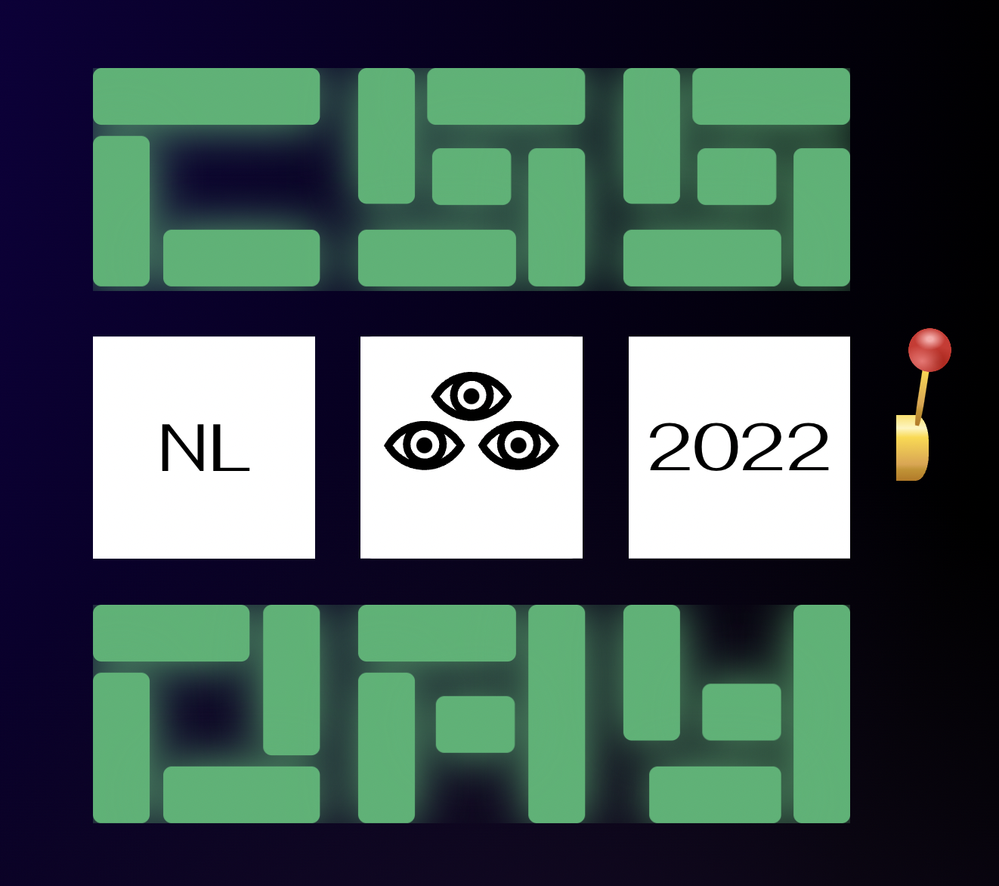
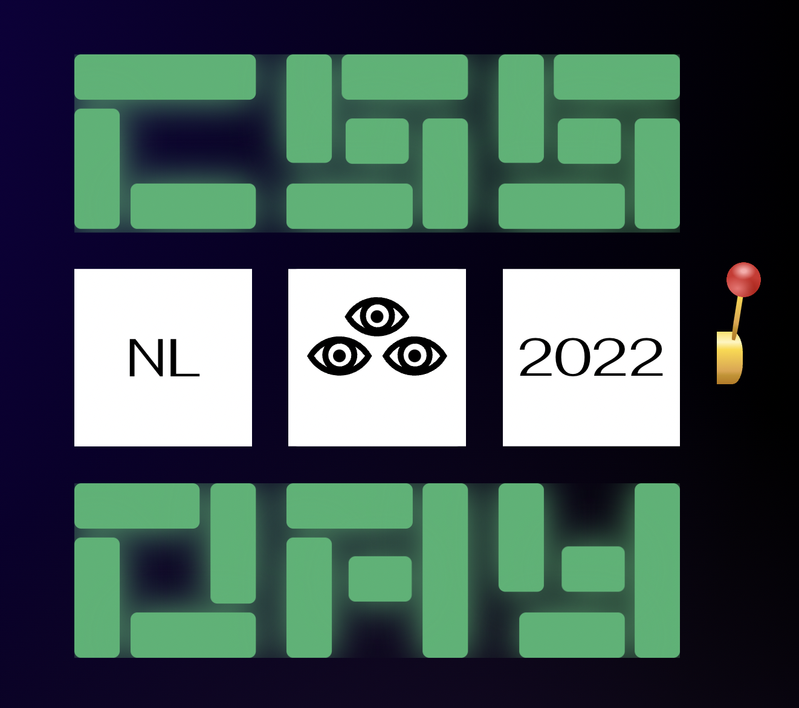
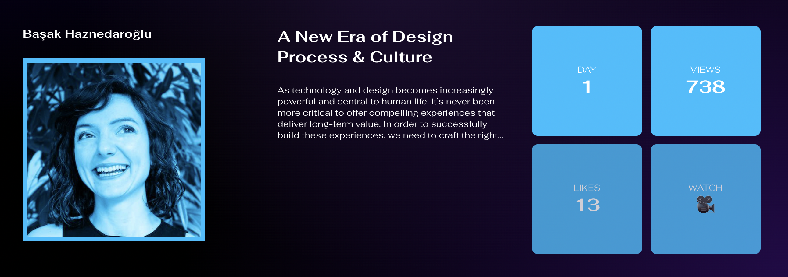
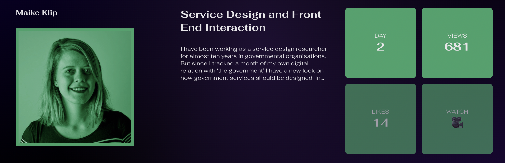

CSS Day - 10e Editie
Tijdens de hackathon ontwikkelden we een interactieve website voor de 10e editie van CSS Day. Ons project omvatte een innovatieve aanpak waarbij gegevensweergave werd gecombineerd met een interactieve "CSS Slotmachine". Met deze slotmachine konden gebruikers door aan een hendel te trekken gegevens verkennen, waarbij informatie over sprekers, bezoekersaantallen en bekeken video's veranderde. Ik zorgde ervoor dat de interface zowel informatief als visueel aantrekkelijk was door gebruik te maken van bewegende data blobs en dynamisch veranderende elementen.
 

Samen met Kevin, Bart en Tristan begonnen we met brainstormen. We bedachten verschillende concepten met als doel de gebruiker verschillende jaartallen met de daarbijbehorende data te presenteren. Tristan raakte vervolgens geinspireerd door Sanne's slotmachine. De gebruiker zou aan de hendel moeten trekken van de slotmachine, waarna deze een combinatie zou tonen die specifieke data genereert. de drie items die samen een combinatie vormen waren:
- Het jaartal
- Afkomst van de spreker(s)
- Aantal bezoekers
Vervolgens zouden er een aantal secties worden gegenereerd met de naam van de spreker, de titel van hun presentatie, de dag waarop ze aanwezig waren en het aantal views op YouTube. We hebben er ook voor gekozen om een link naar hun video toe te voegen.
 Mijn bijdrage
Ik kreeg de verantwoordelijkheid voor zowel de styling als de interactie met de gebruiker. Ik besloot om de kleur van elk jaar te gebruiken als de genererende hoofdkleur voor zowel het logo als andere tekstelementen waarop dit kon worden toegepast. Ook was ik betrokken bij verschillende technische aspecten, zoals het instellen van de tabvolgorde voor de lijst-items, wat met JavaScript moest worden gedaan. Daarnaast nam ik ook de taak op me om een audiofragment op te nemen dat werd afgespeeld wanneer er op de hendel werd geklikt.
Samenwerking
Over het algemeen verliep de samenwerking redelijk goed. Hoewel het jammer was dat sommige van mijn voorstellen niet werden overgenomen, vond ik het belangrijk dat iedereen achter een idee stond voordat we het uitvoerden, in plaats van lukraak iets te doen voor een ander. De communicatie was op een goed niveau, en het mergen van onze branches lukte gelukkig beter dan verwacht.
Nieuwe inzichten
Ik vond het zeker interessant om te zien hoe we de database ophaalden. Ook heb ik aan een aantal teamleden gevraagd wat hun code precies inhield. Het is belangrijk voor mijn ontwikkeling om de logica te begrijpen, na te denken over hoe iets zou moeten werken en het vervolgens stap voor stap te implementeren. Zelf heb ik ook een aantal JavaScript regels geschreven, met name het toevoegen als verwijderen van classes wanneer dat nodig is.
Presentatie dag
De presentatie verliep goed. Toch merkte ik dat niet iedereen ons concept meteen begreep, dus moesten we het meer uitleggen. Zelfs de docenten hadden wat context nodig om te begrijpen hoe onze website werkte. Vooral Vasilis was enthousiast over het geluidje, omdat hij zelf fan is van dit soort kleine eigenaardigheden. Ik vond het werk van andere tafels ook heel interessant en mooi uitgewerkt.
Reflectie
Persoonlijk had ik een ander concept gekozen dan de slotmachine. Bovendien werden er bepaalde beslissingen genomen waarvan het misschien beter was geweest om er meer over na te denken of te onderzoeken of ze haalbaar waren, gezien de tijdsdruk. Aan de andere kant moet ik ook werken aan het accepteren van de beslissingen van anderen, vooral als anderen het ook een goed voorstel vinden. Het zou niet professioneel zijn als ik niet zou meewerken omdat ik zelf geen fan ben van het idee. Al met al ben ik toch ergens blij dat ik mijn input heb kunnen geven en eerlijk heb gecommuniceerd dat ik niet helemaal achter het concept sta, maar wel bereid ben om te helpen waar nodig is.
Wat betreft mijn teamleden, merkte ik een goede samenwerking met Kevin op. Hij had zowel technische als grafische vaardigheden, en we zaten vaak op één lijn tijdens onze samenwerking. Tristan en Bart waren ook zeker behulpzaam, aangezien ze meer technisch dan grafisch waren ingesteld. We hadden echter wel vaak meningsverschillen.